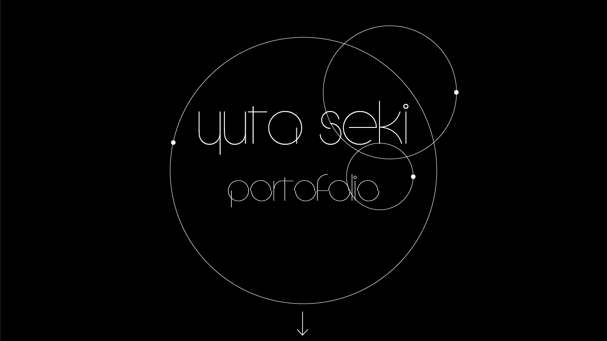

html,css初心者が制作したポートフォリオ
This portfolio

機能 : 関雄太の制作物を紹介しております。
背景 : この度、就職活動を行うにあたり、自分の経験をまとめたポートフォリオが欲しいと感じ、webポートフォリオを制作してみました。テンプレートは一切使わずに制作を行いました。一つのwebサイトを作る大変さを感じました...。また、どうしたらわかりやすく物事を伝えられるかを考えていたら、情報デザインにも興味を持ちました。今はまだ認知的負荷の高いwebサイトになっておりますが、今後暇を見つけて改善していきたいです。他にはそれぞれの制作物をもっと深堀して内容を充実させたいです。後レスポンシブに対応したいとも考えてます。
使用言語、環境 : HTML,CSS
別のポートフォリオ案を見る
BACK